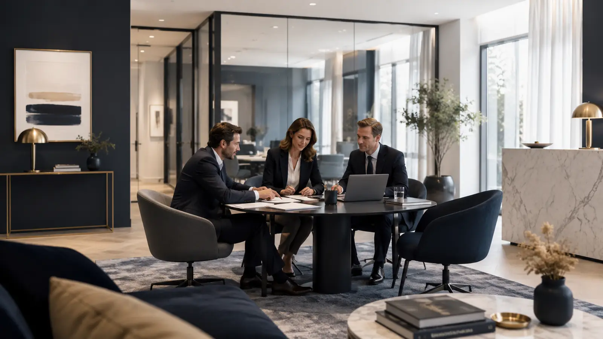
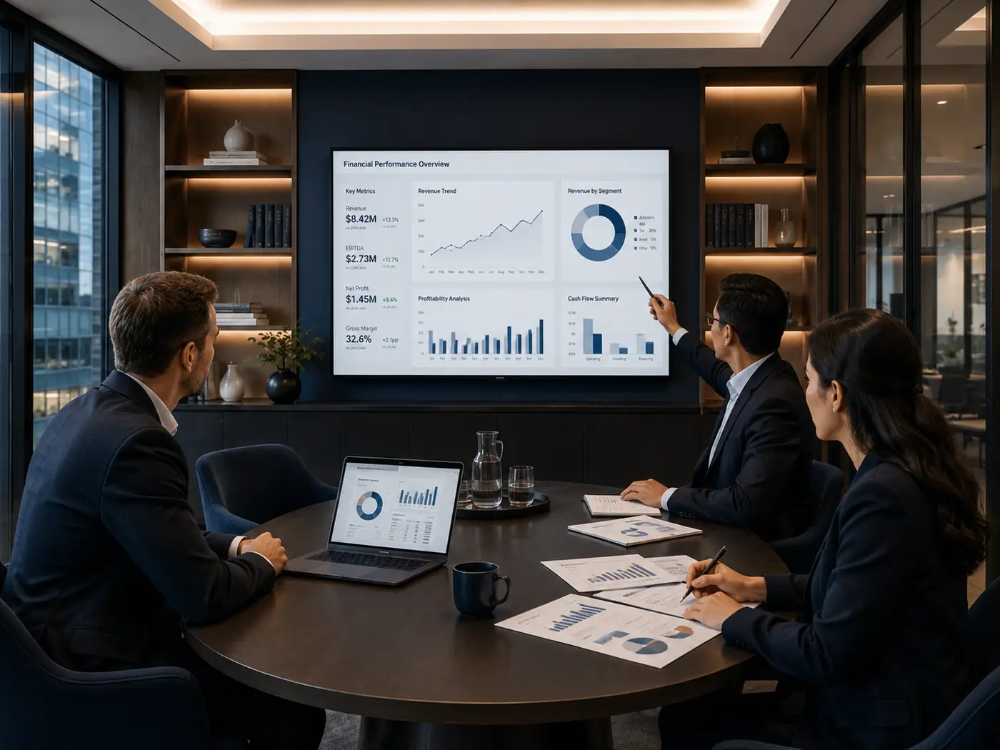
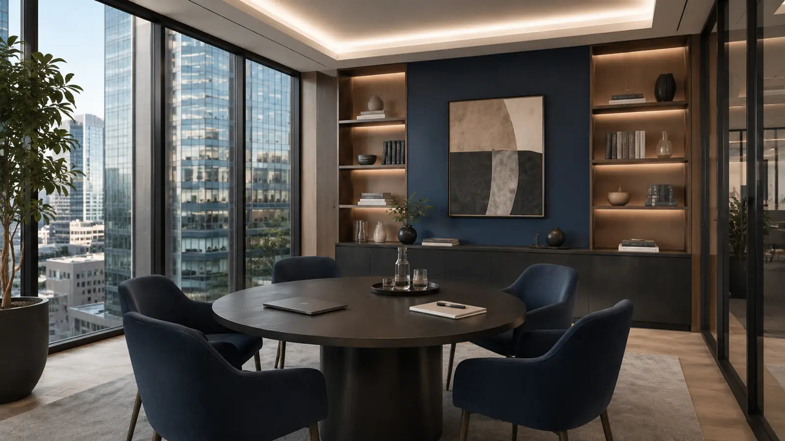

Une relation directe
Un interlocuteur identifié, qui connaît votre dossier.
À vos côtés, aujourd’hui, demain, toujours.
Une équipe pluridisciplinaire
Nice · Allos · Provence-Alpes-Côte d’Azur



Un interlocuteur identifié, qui connaît votre dossier.
Nous vous aidons à en comprendre les conséquences.
Des outils qui libèrent du temps pour le conseil.
Chaque secteur a ses indicateurs, ses contraintes et ses habitudes. Notre accompagnement tient compte de votre réalité opérationnelle.
Tous nos secteursDes exemples de missions, représentatifs de ce que nous menons au quotidien auprès des dirigeants de la région.
Plan de financement, prévisionnel sur trois ans et dossier bancaire.
Évaluation, financement et structure : l’exemple d’une pharmacie.
De l’entreprise individuelle à la société : l’impact sur votre rémunération et vos charges.
Un tableau de bord mensuel pour anticiper les tensions avant qu’elles n’arrivent.
Chaque collaborateur suit ses dossiers de A à Z : vous savez toujours à qui vous adresser.
Découvrir toute l’équipeExpert-comptable · Commissaire aux comptes
Expert-comptable · Commissaire aux comptes
Comptabilité · Social · Juridique · Audit · Conseil
Nos équipes vous accueillent à Nice et à Allos et accompagnent des entreprises dans l’ensemble de la région Provence-Alpes-Côte d’Azur.
Voir les coordonnéesCréation, changement de cabinet, développement, difficultés ou transmission : expliquez-nous votre situation.